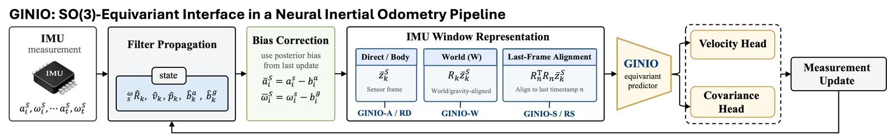
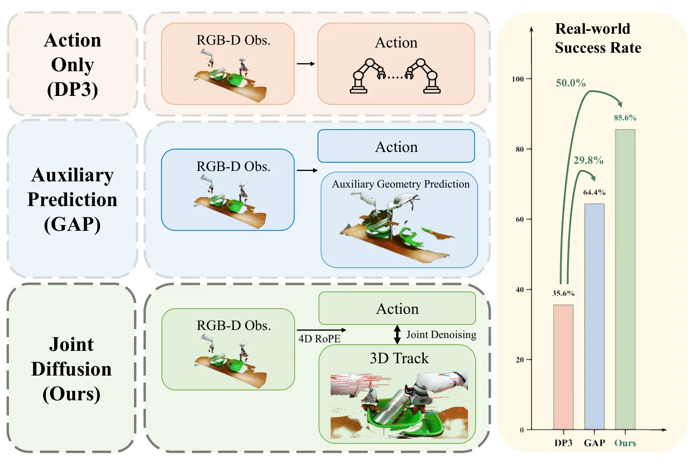
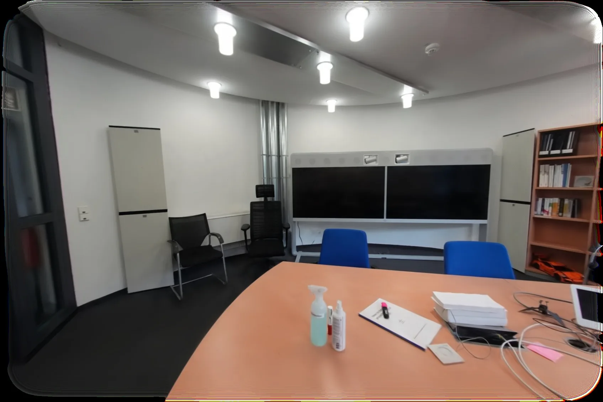
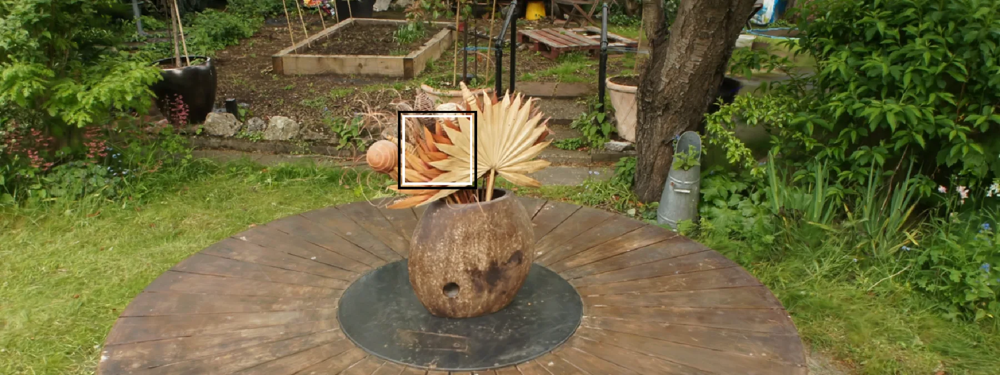
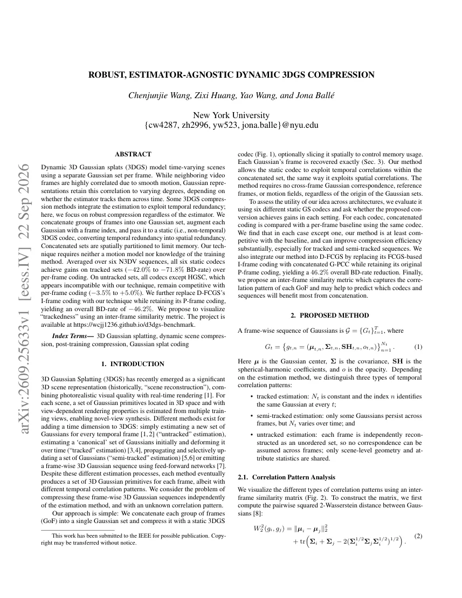
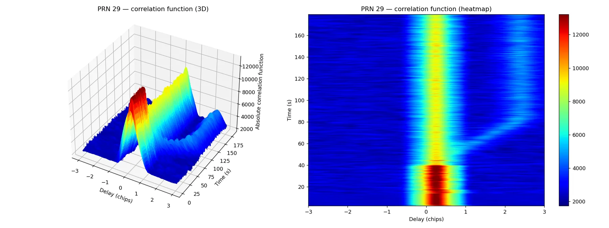

新论文 · 日期 2026-09-23 · score 19 · S层 · Learning + Geometric Optimization SLAM/VIO · cs.RO, cs.LG
内容级别：完整单篇海报
作者：Chankyo Kim, Minghan Zhu, Tzu-Yuan Lin, Avantika Rattan, Maani Ghaffari
评分 19/10
SO(3) 等变神经惯性里程计协方差张量一致末帧对齐 LFA滤波器耦合融合
一句话工作总结：把学习到的惯性测量当作要满足几何变换律的物理量：均值按向量、协方差按张量旋转，再配合末帧对齐与滤波器耦合，使同一运动在任意 IMU 安装坐标系下输出一致的速度与不确定性。
论文把网络输出定义为滤波器消费的“学习型惯性测量”，要求其均值按向量变换、协方差按二阶张量合同变换，从而在任意 IMU 安装坐标系旋转下保持一致。作者提出 GINIO 接口，并引入 Last-Frame Alignment（末帧对齐，LFA）这一确定性预处理，证明在 SO(3) 等变预测器下它与世界系训练等价；同时用谱协方差头替代对角头，使不确定性随运动一起旋转。该接口可实例化在滤波器耦合 NIO、AirIO 式循…
Neural inertial odometry increasingly uses networks as learned measurements inside filtering pipelines. Such measurements should transform consistently under arbitrary IMU mounting conventions: their mean must…

新论文 · 日期 2026-09-23 · score 16 · S层 · Geometry Foundation Models / 3D Foundation Models · cs.RO, cs.CV
内容级别：完整单篇海报
作者：Kalin Norman, Joshua G. Mangelson
评分 16/10
侧扫声呐两视图几何球面-平面交线仰角错配航迹规划
一句话工作总结：把两次侧扫声呐测距写成“球面 ∩ 平面”的闭式约束，用真实孔径裁剪出可见弧长作为位置不确定性代理，并由此给出避免 10°–40° 斜交角的航迹规划规则。
论文指出侧扫声呐很少被按其投影几何建模，常见做法是假设平坦海底把一维测距直接转成深度。作者改用多视图几何：形式化了两视图约束并证明同一特征被限制在一个球面与一个平面的交线（一段弧，locus）上，而不是像光学三角化那样收敛到点。随后用基于真实孔径与安装几何的蒙特卡洛仿真刻画模糊弧长度的决定因素，并把相对轨迹仿真翻译成survey 规划建议：弧长主要由仰角错配（elevation misalignment）驱动，在约…
Sidescan sonar is a common sensor for both manned and autonomous marine exploration and mapping, yet very few methods build upon or exploit the geometric projection model of the sensor. As sidescan sonar is li…

新论文 · 日期 2026-09-23 · score 7 · A层 · Robust State Estimation / Uncertainty · cs.RO
内容级别：半海报
作者：Chuyang Xiao, Peilin Meng, David Held
评分 7/10
双臂操作扩散策略3D 点轨迹4D RoPE动作-运动联合去噪
一句话工作总结：把双臂动作与未来三维点轨迹放进同一个扩散过程联合去噪，用 4D RoPE 把两模态锚在共享时空坐标里互相修正，从而显式建模“动作会怎样改变场景”。
双臂操作中任一臂的运动都会改变共享三维场景并影响另一臂，但多数扩散策略只生成动作、不显式建模这些未来几何后果，已有的预测式变体也通常只把未来状态当作辅助监督或固定条件。作者提出 JAMB：在同一扩散过程中联合去噪双臂动作与未来三维点轨迹，让动作假设与轨迹假设在共享 Transformer 中互相修正，并用 4D 旋转位置编码把所有 token 锚定在共享的时空坐标系（世界位置 + 轨迹时间）上。在 RoboTwin…
Coordinated bimanual manipulation is challenging because the motion of either arm can alter the shared 3D scene and thereby affect the other arm. Yet most diffusion policies generate actions without explicitly…

新论文 · 日期 2026-09-23 · score 14 · B层 · Neural Rendering / 3DGS / NeRF · cs.RO, cs.CV, cs.GR
内容级别：简报式摘要
作者：Runyi Yang, Deheng Zhang, Xiaoye Wang, Kanzhi Wu, Lei Sun, Ajad Chhatkuli, Kunyu Peng, Luc Van Gool, Danda Pani Paudel
评分 14/10
3D Gaussian Splatting场景交互仿真资产ScanNet++遮挡补全
一句话工作总结：把 3DGS 场景中的物体转成可移动仿真资产，并把“资产构建”和“源内容移除”用同一物体身份耦合起来，从而在不破坏未编辑 Gaussian 的前提下支持物理交互。
3D Gaussian Splatting 能重建照片级场景，但表示本身不支持物理交互，而机器人仿真要求物体能独立运动、发生接触并露出此前被遮挡的区域。论文提出 Gaussian 原生的 φ-RIE 流水线，把选定物体转成可移动的仿真器资产，同时保留并补全其余重建；关键观察是资产生成与源内容移除应当耦合，即同一个物体身份同时定义可移动资产与需要移除/补全的场景内容。在 50 个 ScanNet++ 场景上，基于证据…
3D Gaussian Splatting (3DGS) can reconstruct a captured scene photorealistically, but the resulting representation does not by itself support physical interaction. Robot simulation instead requires object-leve…

新论文 · 日期 2026-09-23 · score 13 · B层 · Neural Rendering / 3DGS / NeRF · cs.CV, cs.GR
内容级别：简报式摘要
作者：Chenxiao Hu, Hao Zhang, Yanchen Zhang, Meng Gai, Guoping Wang, Sheng Li
评分 13/10
随机 splatting时序去噪实时渲染2DGS历史可信度
一句话工作总结：用共享像素流的时序神经去噪替换排序与 alpha 混合，在保留免排序光栅化吞吐的同时抑制随机 splatting 的空间噪声。
随机渲染去掉了 Gaussian splatting 的排序与 alpha 混合，代价是引入空间噪声。论文把时序去噪建模在视点一致的随机 splatting 渲染器共享的像素流上，提出时序神经去噪器并在随机 2D Gaussian Splatting 渲染上验证：双路指数滑动平均累积、逐像素可学习的历史可信度预测、固定各向异性空间滤波以及带稳定化的方差门控合成。去噪器在自由视角导航中给出时间稳定输出，同时保留免排序…
Stochastic rendering eliminates the sorting and alpha blending process in Gaussian splatting, at the cost of introducing spatial noise. Formulating temporal denoising over the pixel stream shared by view-consi…

新论文 · 日期 2026-09-23 · score 10 · B层 · Neural Rendering / 3DGS / NeRF · eess.IV, cs.CV
内容级别：简报式摘要
作者：Chenjunjie Wang, Zixi Huang, Yao Wang, Jona Ball\'e
评分 10/10
动态 3DGS压缩BD-rateN3DV估计器无关
一句话工作总结：把多帧 Gaussian 拼接成一组并附加帧索引交给静态编解码器，把时间冗余转成空间冗余，从而在不依赖运动模型或训练方法的情况下压缩动态 3DGS。
动态 3D Gaussian splat 通常逐帧维护一组 Gaussian，相邻视频帧高度相关，但这种相关性能否被利用取决于估计器是否跨时间跟踪点。论文提出不依赖估计器的压缩方案：把若干连续帧的 Gaussian 拼成一组、给每个 Gaussian 附加帧索引，再交给静态（非时序）3DGS 编解码器，从而把时间冗余转成空间冗余，并对拼接集合做空间划分以限制内存。在六个 N3DV 序列上，六个静态编解码器在“被跟踪…
Dynamic 3D Gaussian splats (3DGS) model time-varying scenes using a separate Gaussian set per frame. While neighboring video frames are highly correlated due to smooth motion, Gaussian representations retain t…

新论文 · 日期 2026-09-23 · score 7 · C层 · 纯 GNSS/INS / PPP-AR · eess.SP, physics.space-ph, stat.AP
内容级别：简报式摘要
作者：Minhaj Uddin Ahmad, Muhammad Sami Irfan, Sagar Dasgupta, Mizanur Rahman, Thejesh N. Bandi
评分 7/10
GNSS 欺骗多频一致性CFARL1 C/A + L2C完整性监测
一句话工作总结：量化相干多频 GPS 欺骗所需的频间码对齐精度：完美对齐时跨频一致性检测完全失效，失配超过约 0.05 码片后检测概率迅速上升。
自主车辆越来越多使用跟踪 L2C、L5、L1C 等现代化民用信号的多频 GNSS 接收机。多频工作提升了对自然误差源的鲁棒性，但其对同步多频欺骗的抵抗力仍缺乏刻画。论文提出量化相干欺骗所需频间对齐精度的方法，用以规避接收机可能采用的跨频一致性监测，并在软件定义环境中用 GPS L1 C/A 与 L2C 信号对实现与评估：包含确定性信号合成、通过分数延迟滤波实现的可编程频间码偏移，以及双频 GNSS-SDR 接收处理…
Autonomous vehicles increasingly rely on high-end multi-frequency GNSS receivers that track modernized civil signals, such as L2C, L5, and L1C, alongside legacy GPS L1~C/A. Although multi-frequency operation i…